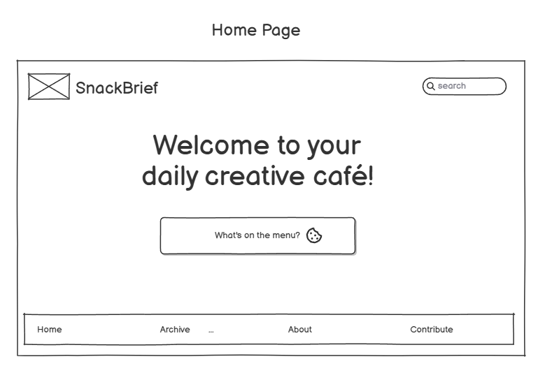

Advantages and Disadvantages of Sketching Wireframes
Cons- It is harder to keep things symmetrical, you can't edit it as easily with erasing and redrawing elements, you can't include specific fonts or icons/logos/images that you may have saved on your computer, and they are not interactive or collaborative compared to digital wireframes. Pros- You can make a sketched wireframe just about anywhere with any paper and any utensil that can write on the paper and it is also faster compared to digitally where you almost have too many options to choose from at times which can also become distracting. Overall, sketching wireframes seem better for more low fidelity designs or if you're on the go and an idea strikes you.
Best Wireframing Style for My Project
For my project, I chose to use low-fidelity digital wireframes. I chose to start with low fidelity so I can alter and refine the design as I go. I also chose to do my wireframes digitally so I can really imagine how it would look in a browser. I liked how I could choose ready made icons to insert as place holders for where I 'may' create my own as well as the button boxes that they had.
Wireframe Examples
Below are images of my project’s wireframes:
Homepage
Category Selector
Today's Prompt

Saved Prompts